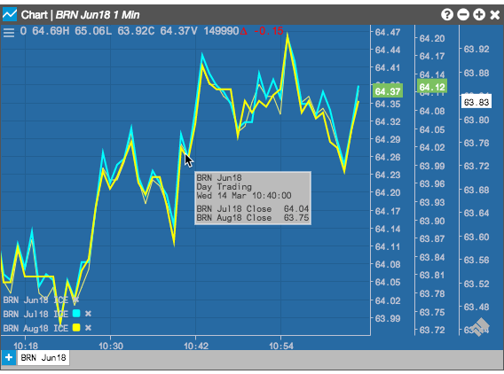
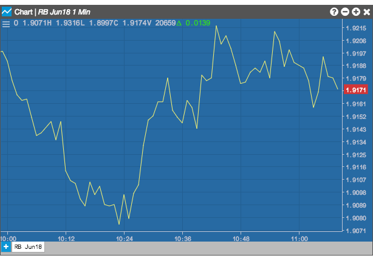
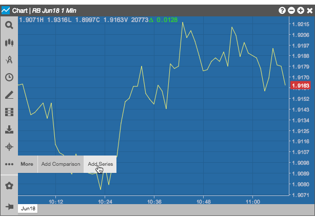
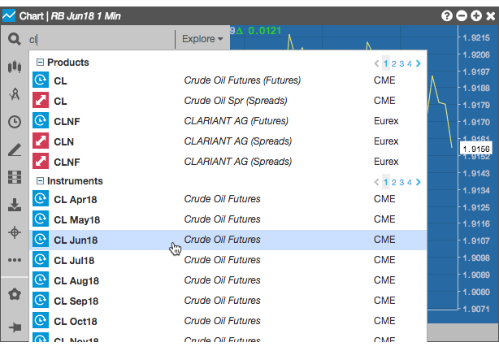
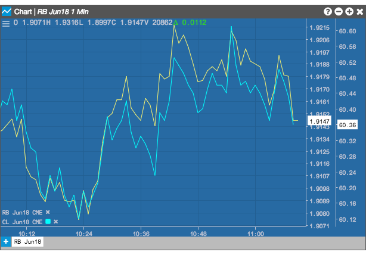
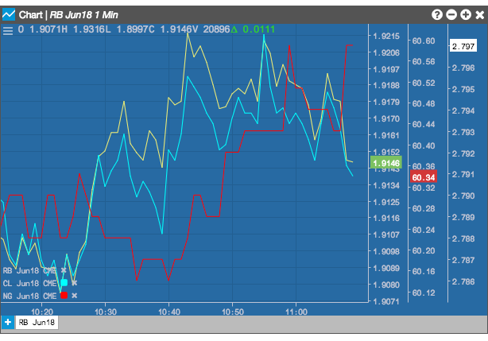
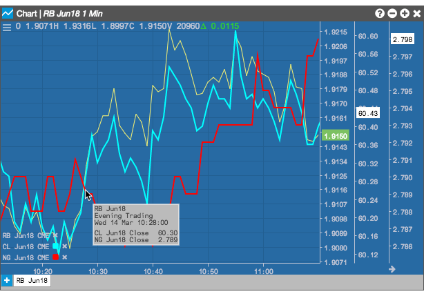

The Add Series feature lets you compare multiple instruments on the same chart. A series uses a line chart, along with an independent price axis, for each instrument in the series. You can add up to two more instruments to the base instrument's chart. You might use a series to compare different instruments that you think might related in some way, such as consecutive expiries of a single instrument or multiple instruments for related products. For example, the following chart uses the Add Series feature to display the activity for the Jun18, Jul18, and Aug18 BRN (Brent Crude) instruments.

In addition to the visual cues shown in a series, hovering over any curve also displays information about all of the line charts that intersect at the point.
Note: Series support only the Line chart type.
To add a series to a chart:






To remove a series from the chart, click the delete icon following the instrument's name in the chart's legend.